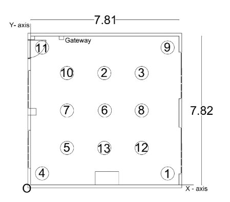
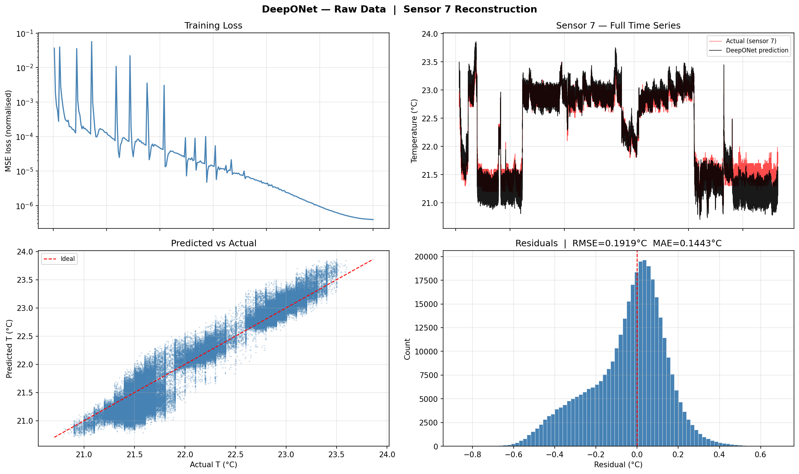
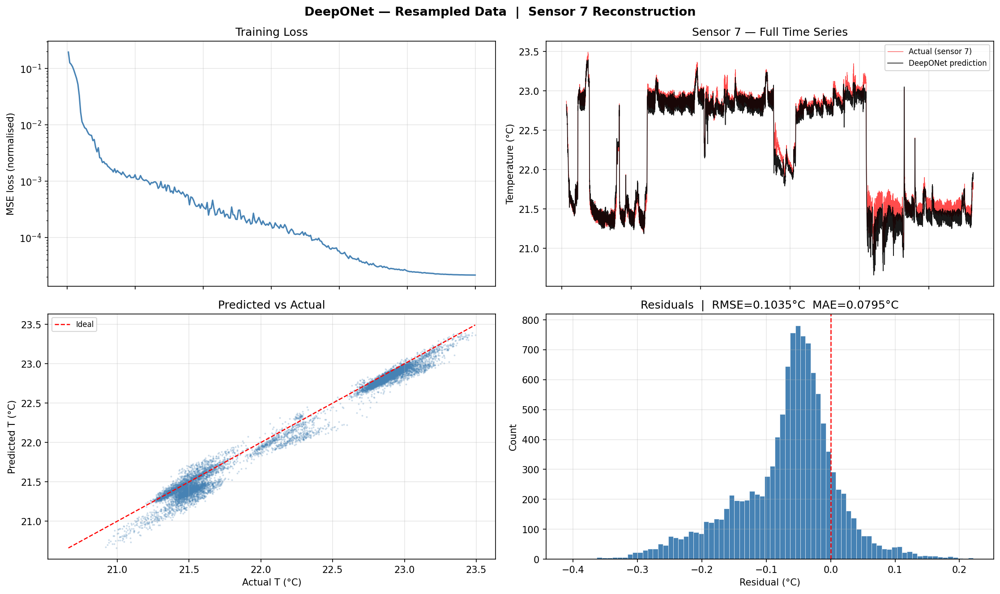
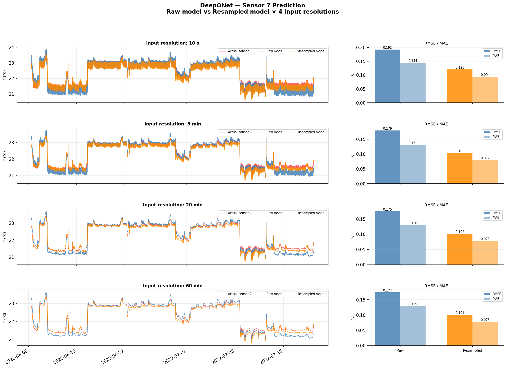
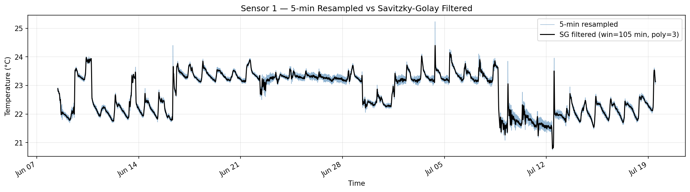
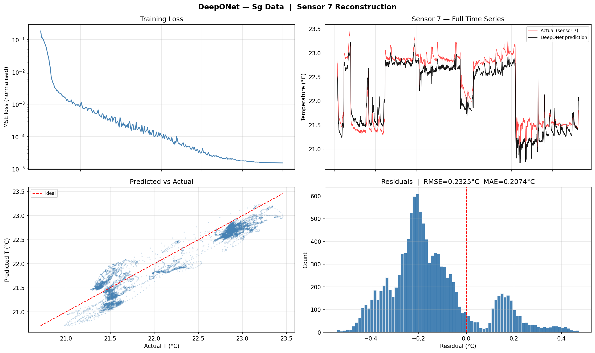
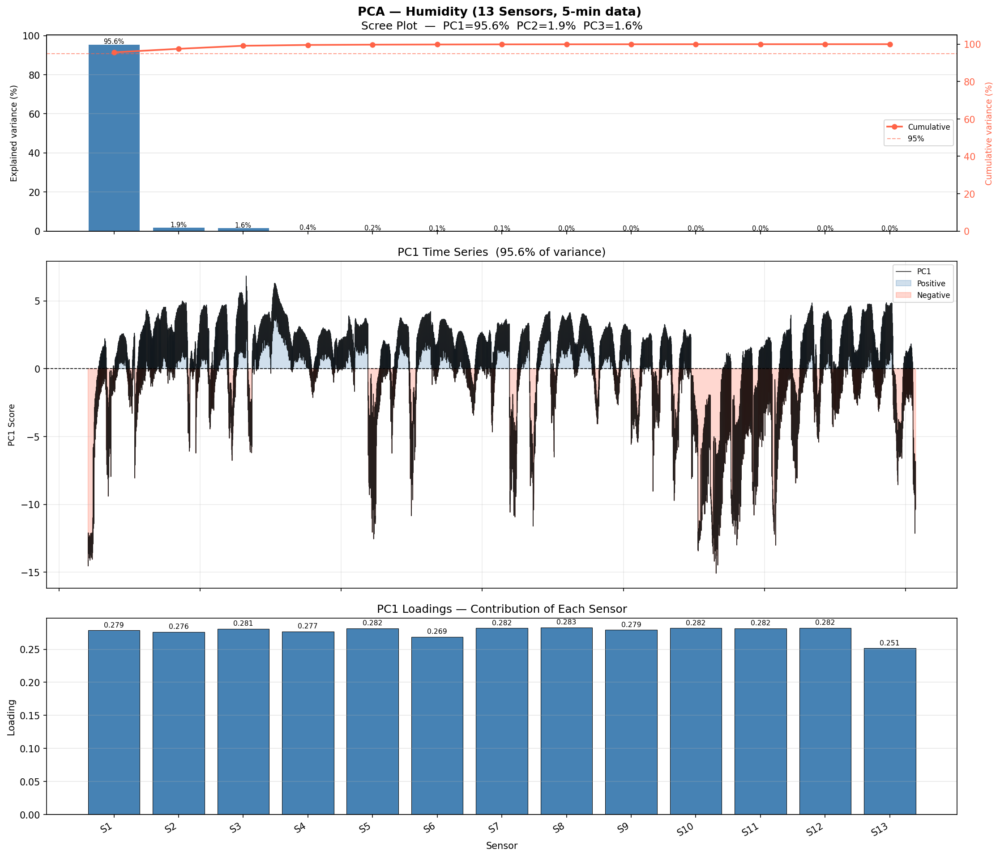
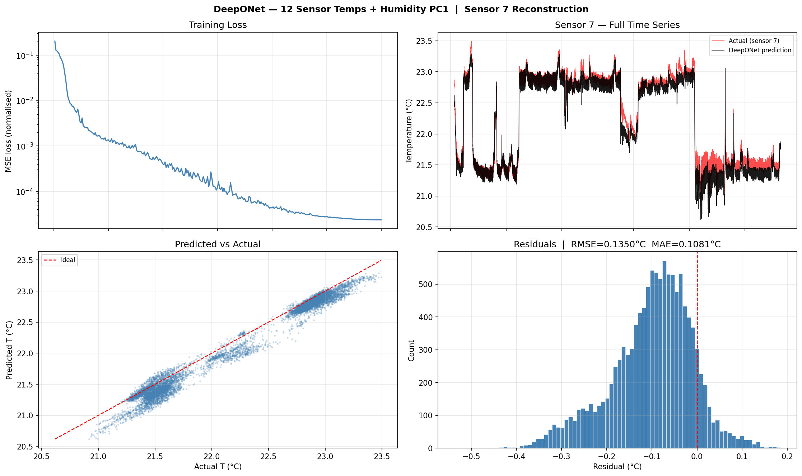
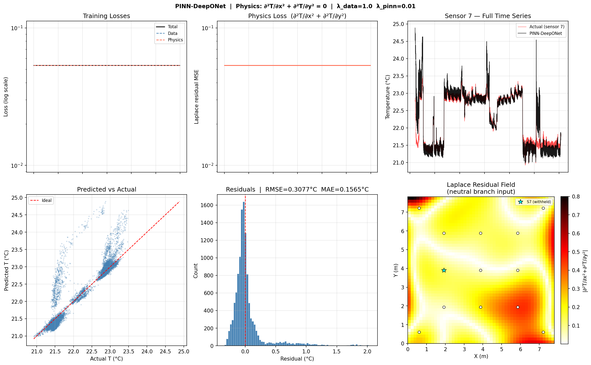
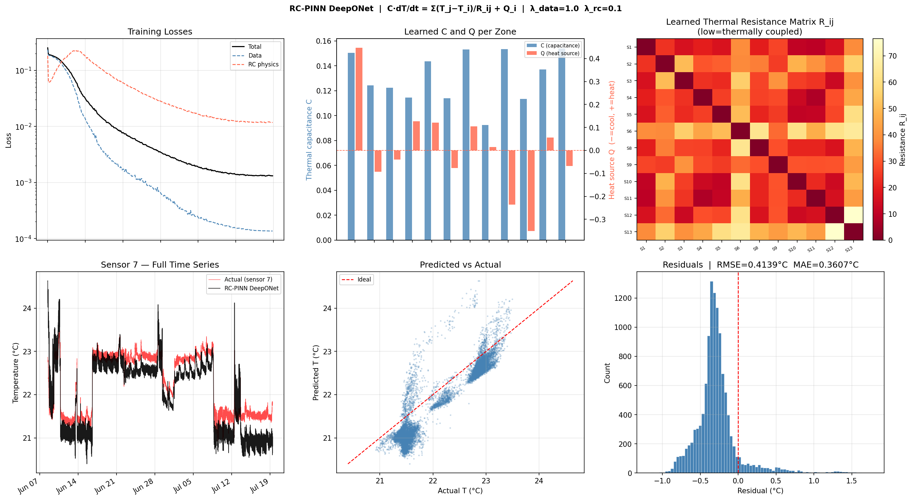

Data Source Paper.
Botero-Valencia et al., MDPI Data — "Exploring Spatial Patterns in Sensor Data for Humidity, Temperature, and RSSI Measurements."
Raw dataset available at: osf.io/zbn8w
All experiments use data collected from Lab 1, a real indoor office environment
instrumented with a wireless sensor network of 13 IoT nodes.
Each node logs temperature, relative humidity, and RSSI at approximately 10-second intervals.
The dataset covers 40 days of continuous measurements,
providing both short-term dynamics and longer seasonal drift.
13
Sensors
40
Days
~10s
Raw Sample Rate
3
Channels (T, RH, RSSI)

Lab 1 Layout. Floor plan of the instrumented room showing walls, furniture, and general sensor deployment zones.Sensor Positions. Exact (x, y) coordinates of all 13 sensor nodes used as the trunk-net inputs for DeepONet.
Figure 1-3 — Sensor 6 Temperature Time Series. Raw 10-second measurements (gray) overlaid with 5-minute resampled means (blue). The high-frequency noise present in the raw data motivates our resampling and filtering investigations.Figure 1-4 — Spatial Field Heatmaps. Mean Temperature (°C), Relative Humidity (%), and RSSI (dBm) across the room, interpolated from the 13 sensor positions using RBF thin-plate spline interpolation. These maps reveal the spatial gradients the model must learn to reproduce.
2
Model Architecture
Operator Network & DeepONet
What is an Operator Network?
Standard neural networks map one fixed-size vector to another. An operator network
goes one level higher: it learns a mapping between functions.
In our case, the input function is the temperature field observed at 12 sensor locations at a given time,
and the output function is the full spatial temperature field — so we can query it at any (x, y) coordinate in the room.
This means the model generalises to locations where we have no sensors,
effectively reconstructing the continuous temperature field from sparse measurements.
How DeepONet Works
DeepONet (Deep Operator Network, Lu et al. 2021) implements this idea with two coupled sub-networks:
Branch Network
Encodes the input function — the sensor readings at a fixed set of measurement locations. Produces a latent vector that summarises the current state of the room.
Trunk Network
Encodes the query location — the (x, y) coordinate where we want to predict the temperature. Produces a basis vector for that position.
The final prediction is the dot product of the branch and trunk outputs
(plus a bias), giving a single temperature value at the queried location.
By sweeping the query over a dense grid, we reconstruct the entire 2D temperature field.
Our Architecture
INPUT ├─ Branch input: 12 sensor temperatures at time t (shape: [12]) └─ Trunk input: (x, y) query coordinate (shape: [2])
BRANCH NET (MLP) 12 → 128 → 128 → 128 → p (ReLU activations) └─ output: latent vector b ∈ ℝp
TRUNK NET (MLP) 2 → 128 → 128 → 128 → p (ReLU activations) └─ output: basis vector t ∈ ℝp
OUTPUT T̂(x,y) = b · t + bias (dot product + scalar bias)
TRAINING STRATEGY ├─ Sensor 7 withheld from branch input (used as test target) ├─ Loss: MSE on withheld sensor temperature └─ Optimiser: Adam, lr=1e-3, cosine annealing
Why Sensor 7?
Sensor 7 is withheld from the branch input in all experiments. The model sees only the other 12 sensors during inference and must reconstruct the temperature at Sensor 7's (x, y) location. This simulates a real-world scenario where a sensor goes offline or is not deployed.
3
Baseline Results
Raw 10s Data vs. 5-Min Resampled Data
As a first experiment we trained two identical DeepONet models —
one on the raw 10-second data and one on 5-minute mean-resampled data —
to understand whether input noise level affects reconstruction accuracy.

Raw (10s) Training. Loss curve, predicted vs. actual time series for Sensor 7, scatter plot, and residual distribution for the model trained on high-frequency raw data.

5-Min Resampled Training. Same four diagnostics for the model trained on 5-minute averages. Noise reduction in the input leads to visibly smoother predictions and lower residuals.

Figure 3-3 — Multi-Resolution Prediction Comparison. Both trained models are evaluated at four input resolutions (10s, 5min, 20min, 60min). Each row shows the predicted vs. actual time series for Sensor 7, with RMSE and MAE bar charts on the right. The resampled model generalises more robustly across resolutions.
4
Noise Analysis
Noisy Data & Savitzky-Golay Filtering
To better understand the effect of noise, we compared the raw 5-minute data with
a smoothed version produced by a Savitzky-Golay (SG) filter,
then trained a DeepONet on the filtered signal.
What is a Savitzky-Golay Filter?
The Savitzky-Golay filter is a digital smoothing technique that fits a low-degree polynomial
to a sliding window of data points using least squares, then replaces each point with the
polynomial's value at that position.
Unlike a simple moving average, it preserves the shape of peaks and edges —
important for temperature data where ramp-up and cool-down dynamics carry physical meaning.
We use a window of 21 points (~105 minutes) and polynomial order 3.

Figure 4-2 — Sensor 1: 5-min Resampled vs. SG-Filtered. The SG filter removes short-term fluctuations while following the overall temperature trend faithfully, including daily cycles.

Figure 4-3 — DeepONet Trained on SG-Filtered Data. Loss curve, time series, scatter, and residuals for the model trained on smoothed inputs. Training is more stable and the residual distribution is tighter than the raw model.
5
Feature Engineering
Humidity–Temperature Correlation & PCA Feature
Temperature and humidity in a room are physically coupled — HVAC systems control both,
and occupancy affects both. We investigated whether humidity carries additional information
that could improve temperature reconstruction.
Figure 5-1 — Per-Sensor T vs. RH Scatter. Linear regression fit for each of the 13 sensors individually. Most sensors show a strong negative correlation (higher temperature → lower relative humidity).Figure 5-2 — Pearson Correlation Summary. Bar chart of Pearson r per sensor and joint scatter. The consistently negative r values confirm a room-wide anti-correlation between T and RH.

Figure 5-3 — PCA on Humidity Signals. Scree plot (left) and PC1 time series (right). PC1 captures the dominant shared variance across all 13 humidity sensors, essentially tracking the room-level humidity mode.
What is PCA?
Principal Component Analysis (PCA) is a linear dimensionality reduction technique.
Given N correlated signals (here: 13 humidity time series), PCA finds a set of orthogonal
directions — principal components — ordered by the amount of variance they explain.
PC1 is the first principal component:
a single time series that is the linear combination of all 13 humidity channels
that explains the most variance. Because all sensors are in the same room and
strongly correlated, PC1 alone captures the dominant room-wide humidity pattern,
compressing 13 channels into 1 without losing much information.
Adding Humidity PC1 to the Model
The branch network input is extended from 12 to 13 features
by appending the humidity PC1 value at each timestep alongside the 12 sensor temperatures.
Everything else (trunk net, training procedure, withheld sensor) stays the same.

Figure 5-5 — DeepONet with Humidity PC1 as Extra Input. Adding the humidity principal component improves the model's ability to track abrupt temperature changes, reducing residual spread.
6
Sequence Modelling
LSTM Branch Network
The baseline DeepONet branch network processes a single timestep snapshot of the sensor array.
It has no memory of past states. To exploit temporal dependencies in the temperature signal,
we replace the MLP branch with a Long Short-Term Memory (LSTM) network
that encodes a sliding window of recent history.
What is LSTM?
LSTM (Long Short-Term Memory) is a type of recurrent neural network designed to learn
long-range dependencies in sequential data. Unlike a simple RNN, an LSTM cell maintains
two state vectors: a cell state (long-term memory)
and a hidden state (short-term output).
Three gates — input, forget, and output — learn to write, erase, and read from the cell state,
preventing the gradient from vanishing over long sequences.
This makes LSTMs well-suited for temperature time series, where a room's thermal inertia
means the current temperature depends on what happened in the past hour or more.
LSTM Branch Architecture
LSTM BRANCH NET ├─ Input: sliding window of 48 timesteps × 12 sensors (= last 4 hours at 5-min resolution) ├─ LSTM Layer 1: hidden_size = 128, dropout = 0.1 ├─ LSTM Layer 2: hidden_size = 128 ├─ Take last hidden state h_T ∈ ℝ128 └─ Linear projection: 128 → p (same p as trunk net output)
TRUNK NET (unchanged MLP) 2 → 128 → 128 → 128 → p
OUTPUT T̂(x,y) = b_LSTM · t_trunk + bias
KEY DIFFERENCE vs. BASELINE Branch sees 48 past timesteps instead of just the current snapshot. The LSTM learns which part of recent history matters most.
Figure 6-2 — DeepONet-LSTM Results. Loss curve, predicted vs. actual time series for the withheld Sensor 7, scatter plot, and residual distribution. The LSTM branch captures temporal dynamics that the snapshot-based MLP branch misses, leading to improved tracking of temperature ramps.
7
Physics-Informed Learning
Physics-Informed DeepONet (RC-PINN)
Data-driven models can fit observations well but may produce physically inconsistent predictions —
for example, violating energy conservation or ignoring the thermal inertia of walls and furniture.
To address this, we introduce a physics-informed regularisation term derived from
an RC thermal network model of the room.
What is a Physics-Informed Neural Network (PINN)?
A PINN adds a physics residual term to the training loss so that the network is penalised
whenever its predictions violate known governing equations — here, the thermal energy balance
of the room. This acts as a structured prior: the model cannot just memorise sensor patterns,
it must also be consistent with heat flow physics. The result is typically better generalisation,
especially in low-data or out-of-distribution scenarios.
RC Thermal Network Model
We model the room as a resistor-capacitor (RC) thermal network,
a lumped-parameter analogy borrowed from circuit theory where:
Thermal Resistance Rij
Represents the insulating effect between two zones i and j (walls, air gaps). A high R means heat flows slowly between the two locations.
Thermal Capacitance Ci
Represents the heat storage capacity of zone i (walls, furniture, air mass). A high C means the zone takes longer to heat up or cool down.
The energy balance for zone i over time gives the RC residual:
RC RESIDUAL (physics constraint)
C_i · dT_i/dt = Σ_j [ (T_j − T_i) / R_ij ] + Q_i
where: T_i = predicted temperature at zone i R_ij = thermal resistance between zones i and j (learned) C_i = thermal capacitance of zone i (learned) Q_i = net heat injection at zone i (HVAC, occupancy) (learned)
TOTAL LOSS L = L_data + λ · L_RC L_data = MSE between predicted and measured T at Sensor 7 L_RC = MSE of the RC residual across all sensor zones λ = weighting hyperparameter balancing data fit vs. physics
Key Insight
The R, C, and Q values are not prescribed from engineering drawings — they are
jointly learned alongside the network weights during training.
This means the model discovers the effective thermal properties of the room
purely from temperature data, while using the RC structure to constrain
the solution to physically plausible dynamics.
Results

Figure 7-3 — Physics-Informed DeepONet (PINN). Loss curve, time series, scatter, and residual distribution. The physics regularisation suppresses large prediction errors during rapid temperature changes, where the data-only model tends to lag.

Figure 7-4 — RC Thermal Network PINN. Full RC-regularised training results. The jointly learned R, C, Q parameters impose a physically consistent structure on the spatial temperature field, improving extrapolation to unseen conditions.
Next Steps
Ongoing investigations include probabilistic uncertainty quantification over the spatial field
(predicting not just temperature but confidence intervals at every room location),
and multi-lab generalisation testing across different room geometries.
8
Uncertainty Quantification
Spatial Uncertainty Maps
Knowing how well the model knows the temperature at each room location is as important as
the prediction itself. A model that is confident everywhere — even where sensor coverage is sparse —
cannot be trusted for decision making (e.g. HVAC placement, fault detection).
We extend DeepONet to output both a mean prediction and a
predictive variance at every queried location.
What is Uncertainty Quantification?
Uncertainty quantification (UQ) means estimating not just a single prediction value but
also a confidence measure for that prediction. In a probabilistic neural network,
the model outputs the parameters of a probability distribution — here a Gaussian with
mean μ and variance σ² — instead of a single number.
A high σ² at a location signals that the model lacks confidence there,
typically because no training sensor is nearby. This spatial uncertainty can guide
decisions such as where to add new sensors to maximally reduce overall uncertainty.
Probabilistic DeepONet Architecture
PROBABILISTIC BRANCH NET ├─ Input: 13 sensor temperatures (all sensors used — no withholding) ├─ MLP: 13 → 128 → 128 → 128 → 2p (double output width) ├─ Split output into two halves: │ b_mean ∈ ℝp (mean latent) │ b_logvar ∈ ℝp (log-variance latent)
TRAINING LOSS Gaussian NLL: L = Σ [ log σ² + (T_true − μ)² / σ² ] The model is penalised for both inaccurate means and mis-calibrated variances.
Full-Coverage Uncertainty Map
In the first experiment all 13 sensors are used as branch inputs. After training,
we query the model on a dense grid spanning the entire room and plot the predicted
variance σ² at each grid point as a heatmap.
Regions with low σ² are well-constrained by nearby sensors;
regions with high σ² represent locations the model is uncertain about.
Figure 8-1 — Predictive Uncertainty Map (All 13 Sensors). Spatial heatmap of predicted variance σ² across the room when all sensors are active. Low uncertainty near sensor locations, elevated uncertainty in corners and areas with sparse coverage.
Uncertainty with Withheld Sensors
In the second experiment, 4 sensors are removed from the branch input,
simulating sensor failure or a sparser deployment.
The model receives only 9 sensor readings at inference time.
We expect σ² to spike at — or near — the withheld sensor locations,
since the model now has no direct information about those zones.
Figure 8-2 — Predictive Uncertainty Map (4 Sensors Withheld). Removing 4 sensors from the branch input causes σ² to rise at their locations, confirming the model correctly identifies its own ignorance. This property can be used to guide optimal sensor placement.
Practical Application
The uncertainty map answers the question: "If I can only afford N sensors, where should I place them?"
By iteratively adding a virtual sensor at the highest-σ² grid point and re-evaluating,
one can derive a greedy optimal sensor placement strategy purely from the trained probabilistic model —
no additional data collection required.